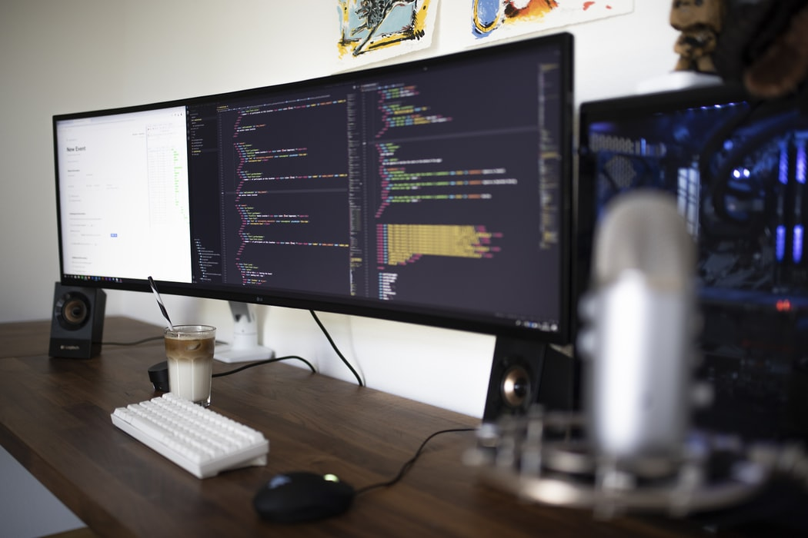

Programming involves tasks such as
Programming involves tasks such as: analysis, generating algorithms, profiling algorithms' accuracy and resource consumption, and the implementation of algorithms in a chosen programming language (commonly referred to as coding).

Machine language
See also: Computer program § History, Programmer § History, and History of programming languages
Go somewhereCompiler languages
High-level languages made the process of developing a program simpler and more
Go somewhereQuality requirements
Whatever the approach to development may be, the final program must satisfy some fundamental properties
Go somewhereReadability of source code
In computer programming, readability refers to the ease with which a human reader
Go somewhere

Algorithmic complexity
The academic field and the engineering practice of computer programming are both
Go somewhere